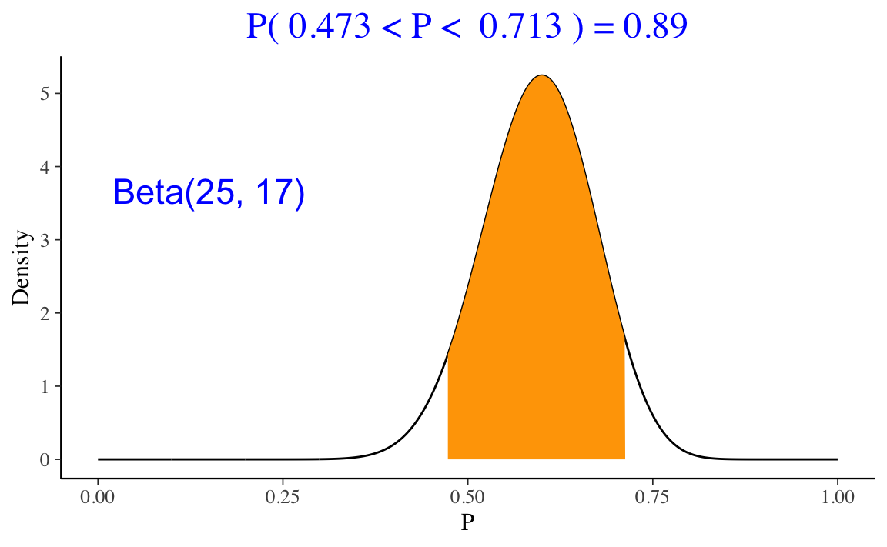
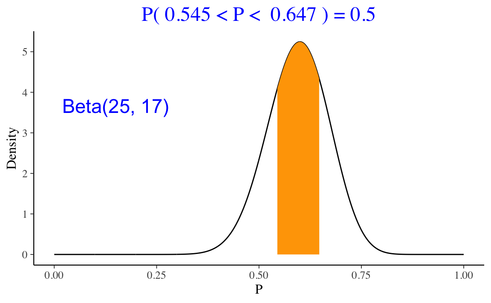

2.2 Inferenza bayesiana con distribuzioni a priori continue
L’inferenza bayesiane sulla proporzione \(\theta\) si basa su vari riepiloghi della distribuzione a posteriori Beta. Il riepilogo che si calcola dalla distribuzione a posteriori dipende dal tipo di inferenza. Consideriamo qui su due tipi di inferenza: (1) problemi in cui si è interessati a valutare la plausibilità che il parametro assuma valori contenuti in un dato intervallo di valori, (2) stime dell’intervallo che contiene il parametro ad un dato livello di probabilità soggettiva.
2.2.1 Approccio bayesiano alla verifica di ipotesi
Nell’esempio precedente sui dati di Zetsche, Bürkner, and Renneberg (2019), la nostra credenza a posteriori relativa a \(\theta\) (ovvero, la probabilità che l’aspettativa dell’umore futuro sia distorta negativamente) è descritta da una distribuzione Beta(25,17). Una volta definita la distribuzione a posteriori, ci possiamo porre altre domande. Per esempio: qual è la probabilità che \(\theta\) sia maggiore di 0.5?
Una risposta a questa domanda si trova con
1 - pbeta(0.5, 25, 17)
#> [1] 0.8944882oppure, in maniera equivalente, con
ProbBayes::beta_area(lo = 0.5, hi = 1.0, shape_par = c(25, 17))Questo calcolo può essere svolto mediante simulazione. Dato che conosciamo la distribuzione target, è possibile ricavare un campione casuale di osservazioni da una tale distribuzione e poi riassumere il campione in modo da calcolare \(\theta > 0.5\).
nsim <- 1e6
theta_samples <- rbeta(nsim, 25, 17)
sum(theta_samples > 0.5) / nsim
#> [1] 0.894317Il risultato della simulazione è molto simile a quello ottenuto in precedenza.
2.2.2 Intervalli di credibilità
Un secondo tipo di inferenza bayesiana è quella che ci porta a formulare gli intervalli di credibilità. Un intervallo di credibilità di ordine \(a \in [0, 1]\) è l’intervallo di valori che contiene una proporzione della distribuzione a posteriori pari ad \(a\).
La funzione ProbBayes::beta_interval() consente di calcolare l’intervallo di credibilità che lascia la stessa probabilità nelle due code. Per esempio, l’intervallo di credibilità all’89% per la distribuzione a posteriori dell’esempio relativo ai dati di Zetsche, Bürkner, and Renneberg (2019) è
ProbBayes::beta_interval(0.89, c(25, 17))
Per i dati di Zetsche, Bürkner, and Renneberg (2019), l’intervallo di credibilità all’50% per la distribuzione a posteriori è
ProbBayes::beta_interval(0.5, c(25, 17))